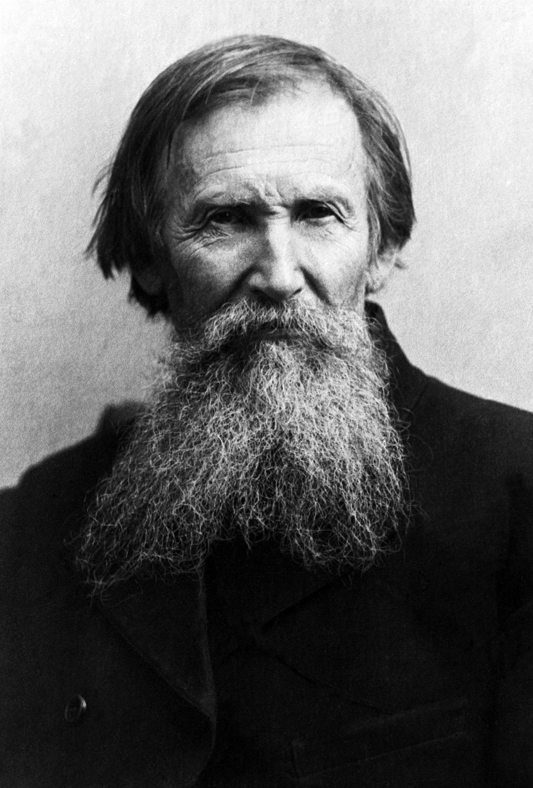

Виктор Михайлович Васнецов - знаменитый русский художник-живописец, передвижник. Художник Васнецов: краткая биография Будущий художник родился в семье священника в 1848 году в Вятской губернии. Мальчик учился в Вятском духовном училище, а затем в Вятской духовной семинарии, которую так и не окончил, решив ехать учиться в Петербург - в Академию художеств.